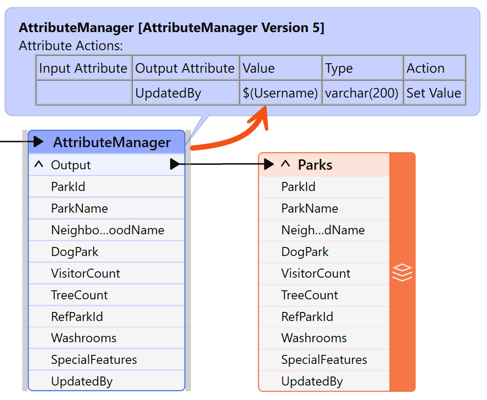
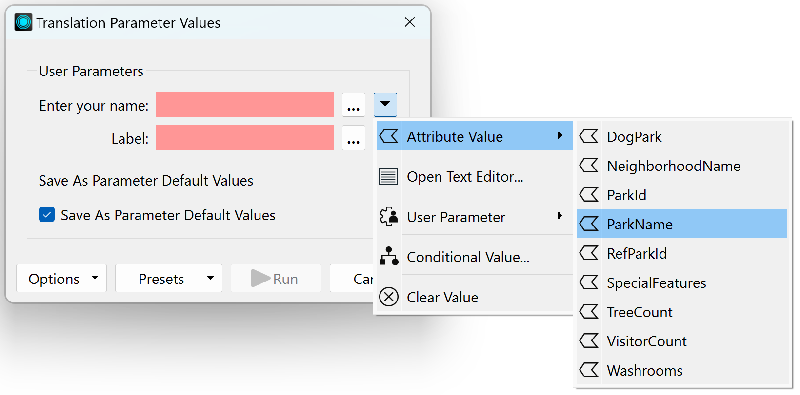
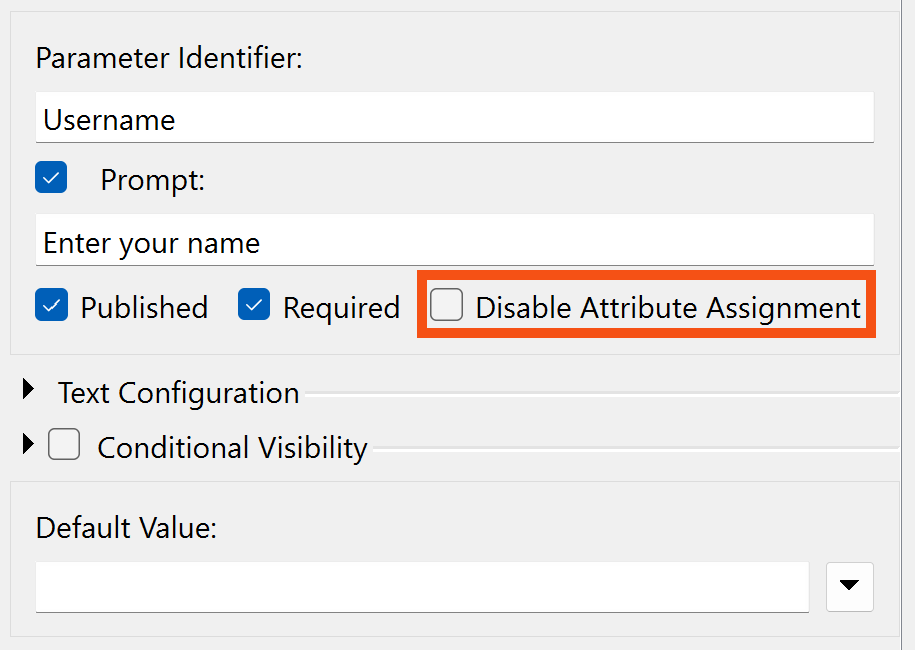
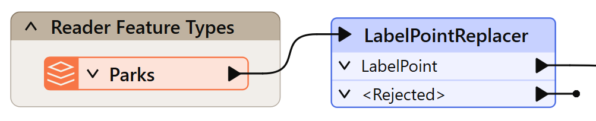
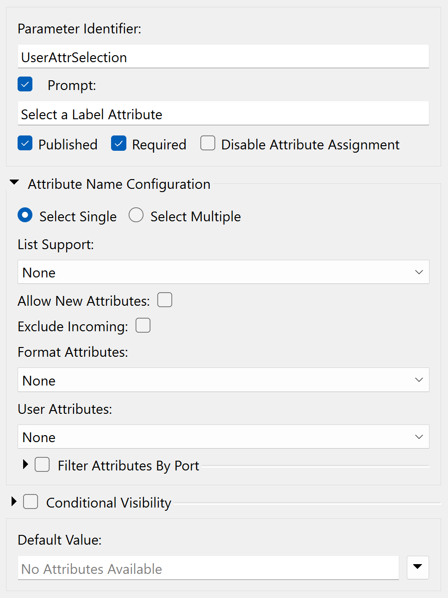
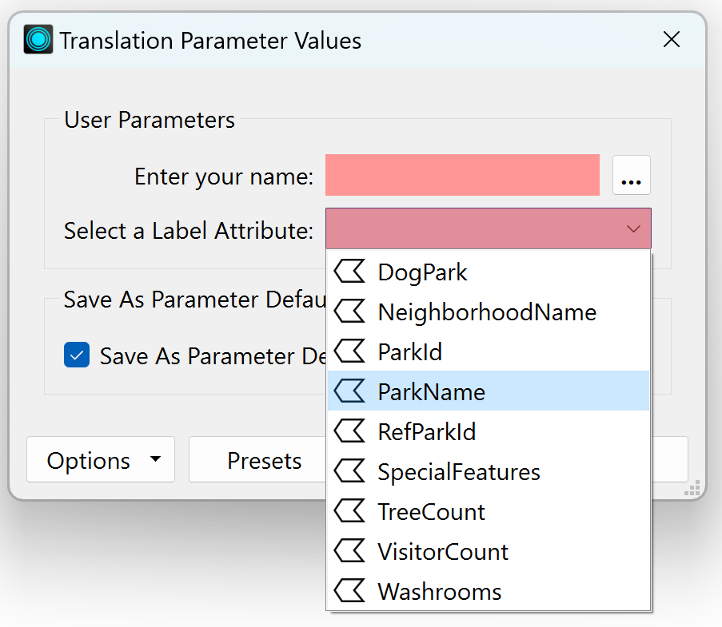
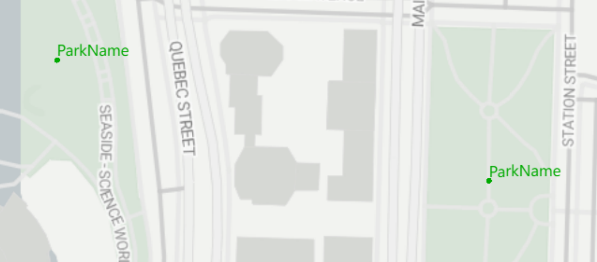
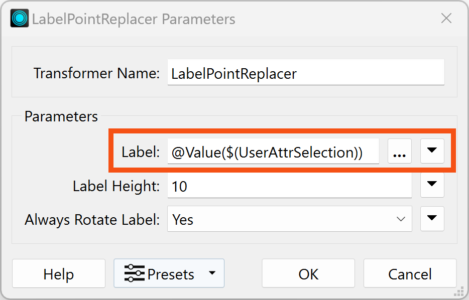
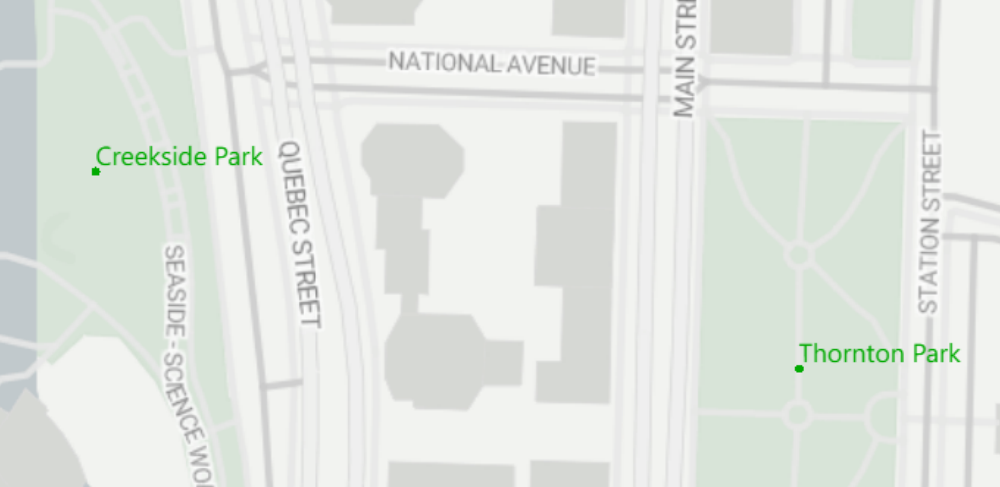

After completing this lesson, you’ll be able to:
Sometimes, an FME parameter is designed to accept either a fixed value or the value of an attribute. We call these parameters _OR_ATTR parameters because they allow a value OR an attribute.
Workspace authors can create user parameters that behave this way. Specifically, a user parameter can allow either:
The first two of these capabilities are controlled by a setting in the user parameter called Attribute Assignment.
Let's recap: some FME parameters - but not all - allow an attribute to be used instead of a fixed value. We call this Attribute Assignment:
When a user parameter is created or linked to one of these FME parameters, then it, too, picks up that capability:

So this allows the end user to enter either a fixed value or to select an attribute that supplies the value.
Attribute assignment is important when an author creates a user parameter because it controls whether or not the end user can select an attribute when choosing a value for the parameter.
For example, this workspace has an UpdatedBy attribute and an AttributeManager transformer that sets UpdatedBy using a user parameter where the user is prompted to enter their name:

When prompted, the user can enter their name, but they can also select an attribute:

This makes no sense. The author does not want the user to have the ability to select an attribute, only to enter a single string. The setting that lets the author control this is called Disable Attribute Assignment and is found on the parameter definition dialog:

By checking this, the user is no longer allowed to select an attribute in the Translation Parameters prompt:

Instead, they are required to type in a single text value.
Only some FME parameters allow attribute assignment. Enabling attribute assignment in a user parameter will not change this. For example, the Snapper tolerance is never allowed to use attribute assignment, even if the value is set by a user parameter with the Disable Attribute Assignment box unchecked.
If you share and linke a user parameter with attribute assignment disabled to an FME parameter that allows attribute assignment and one that doesn't, FME takes the safe option and disallows attribute selection.
So, attribute assignment handles the case where you want the user to enter a fixed value, and you may also give the end user the option to select an attribute.
However, the reverse case must also be handled: you don't want the user to be able to enter a fixed value; you only want them to be able to select an attribute.
For example, here, an author is adding a label to the data:

The author wants the user to select an attribute to provide the label but cannot enter text. In this scenario, they need to create a user parameter with a particular type called Attribute Name:

After linking this user parameter to the LabelPointReplacer's FME parameter, when the workspace is run, the user is permitted to select an attribute and ONLY an attribute:

However!
There is a catch to this operation. As the type suggests, the user parameter returns an attribute name but not the attribute value.
If the workspace is run in this state, then the LabelPointReplacer is supplied with the attribute name (not value) and uses it as the label, like so:

The author must embed the user parameter name inside an FME function to fetch the value of the attribute to which it refers.
To do this, the author finds the LabelPointReplacer parameter and changes it (either directly in the FME parameter or via the Text Editor window) to be @Value($(UserAttrSelection)).
The @Value() function replaces the name of the attribute with its actual value:

Now, when the workspace is run, the output will be correct:
